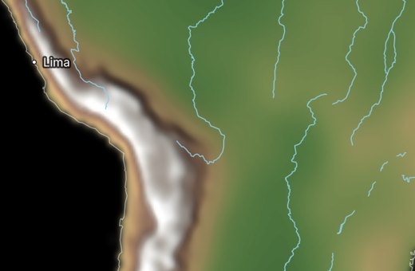
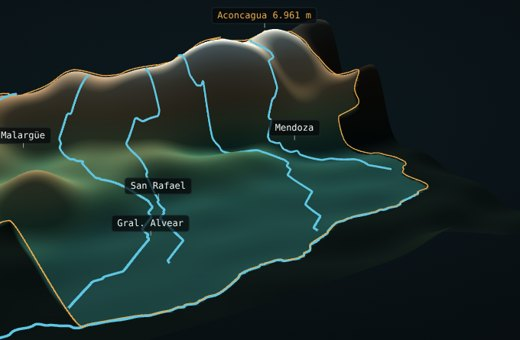

Una muestra de proyectos con datos reales: modelos, mapas, cartografía profesional, archivos e investigación.

2026 · Python · Cartografía
Relieves de América del Sur y Argentina
Mapas de relieve sombreado con colores de elevación, los grandes ríos y la provincia de Mendoza destacada, a partir de ETOPO1 (NOAA) y Natural Earth.
PythonMatplotlibShapelyRelieve sombreado
Ver mapas y código en GitHub →

2026 · JavaScript · Three.js · Python
Relieve 3D de Mendoza
Visor interactivo de la provincia en 3D, con la cordillera, el Aconcagua, los ríos principales y el límite provincial. Se gira con el mouse o el dedo.
Three.jsWebGLETOPO1Natural Earth
2026 · Diplomado, Universidad de Chile
Autocorrelación y regresión espacial en R
Análisis de la tasa de homicidios en los estados de EE. UU.: comparación de cuatro criterios de vecindad, I de Moran y C de Geary, conglomerados LISA, puntos calientes de Getis-Ord, modelos de rezago y de error espacial con efectos directos e indirectos, y regresión geográficamente ponderada.
spdepspatialregGWmodeltmapLISASAR / SEMGWR
Ver el código en GitHub →
2022–2025 · Sector público, consultoría e independiente
Cartografía y SIG profesional
Cartografía y análisis territorial para la planificación urbana en la Secretaría de Desarrollo Urbano del Gobierno de Mendoza; cartografía ambiental en AIRON S.A. para un proyecto PNUMA–GEF; mapas temáticos y análisis espacial para clientes internacionales en Upwork.
QGISArcGISCartografía temáticaPlanificación urbana
2018–2023 · Departamento General de Irrigación e INCIHUSA-CONICET
Archivo Histórico del Agua
Catalogación, digitalización e ingreso a bases de datos de fondos documentales sobre la gestión del agua en Mendoza. Participé en el armado de un estativo digitalizador (Bibliohack) y en el artículo que presenta el archivo en la revista Corpus (2020).
CatalogaciónDigitalizaciónBases de datos
2020–2022 · Cátedra Extensión y Territorio, UNCuyo
Ciudades de 15 minutos y mapeo participativo
Informe técnico sobre ciudades de 15 minutos en Argentina, junto al Instituto de Ciencias Ambientales, y un proyecto de extensión de mapeo participativo con organizaciones comunitarias y la Dirección de Recursos Naturales Renovables.
Accesibilidad urbanaMapeo participativoExtensión